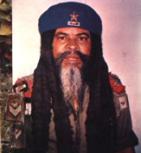
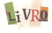
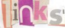
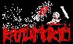
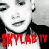
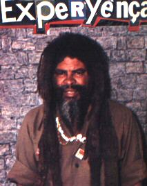
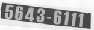

|
|

Home ::
Seguidores
Seguidores
Projetos influenciadas por Damião
Experiença
Este espaço é para banda ou projetos que são influenciados pela obra damiônica. Se sua banda/projeto tem influências de Damião escreva-nos para
publicação aqui, agora validado por ele em pessoa.
|
Supersimetria
|
|
|

|
Free jaz, grindcore, forró, trance, viola,
verdadeiro metal, música caipira, Daminhão, jaiz, narguiles,
música mecânica, punk, instrumentos exóticos,
ruídos de construção, Piracicaba, Politeísmo assíncrono, camadas OSI,
reverberação quântica, assimetria sonora.
Dos criadores deste site Daminhonico, deguste mais em
http://www.supersimetria.net
|
|
|
|
|
Rattu Morto
|
|
|
|

|
RÅTTÜ MORTÖ é uma catástrofe sonora: Com
músicas de curta duração e aparentemente
tocadas com o mesmo instrumental, RÅTTÜ
MORTÖ é um barulho inaudível, com urros,
gritos primatas e escarros psicopatas que
refletem uma percepção damiônica de música.
Grind Noise de prima !!!
Para sons e contatos:
http://esgoto.freeshell.org
|
|
|
|
|
Zé Urbano
|
|
|

|
Poeta e músico experimental, Zé Urbano
desenvolve poemas dadaísticos-surreais com
influências e citações aos mestres Damião e
Hermetto. Gustavo Jobim é o alter ego ( ou
seria o ego real ? ) de Zé Urbano que ainda
cria músicas eletrônicas que nos dão a
sensação de texturas sonoras, mares de
sons..., diferente do que você já viu, uma
experyença eletrônicaos singular.
http://www.zeurbano.blogspot.com
http://www.gustavojobim.hpg.ig.com.br |
|
|
|
|
Zumbi do Mato
|
|
|

|
A banda carioca Zumbi do Mato mistura
inúmeros estilos sendo divertida e estranha.
Vocais, bateria, baixo, teclados e até onde
sabemos não ouvimos guitarras ! Formada em
1989, possui influências de Daminhão. Ouça
as músicas, especial atenção a Garota de
Ipanema que segue um molde dos discos
acústicos do mestre Daminhão.
http://www.z1bidomato.blogspot.com
http://www.zumbidomato.kit.net |
|
|
|
|
Rogério Skylab
|
|
|
|

|
Desde seu primeiro disco em 1992, Skylab
desenvolve um trabalho com sua músicas
experimentais, inteligentes e de bom humor,
possui boa projeção no cenário alternativo
brasileiro e um disco dedicado a Daminhão
Experiênça.
http://www.rogerioskylab.com.br
|
|
|
|
|
Psicodélicos e Psicóticos etc... e tal |
|
|
 |
A música dos Psicodélicos e Psicóticos estrutura-se
numa sequência melódica aleatória ao mesmo tempo
sedimentada numa harmonia, contendo simultaneamente temáticas nonsenses e surreais. O grupo encara um
conjunto como elementos independentes os quais estão
interligados formando esse todo que a
junçao dos intrumentos que compõe esse mesmo conjunto.
Por ser formado de acordo com a adição autônoma dos
elementos, os Psicodélicos e Psicóticos ( Psi Psi )
estão sempre predispostos a transformar com novas
junções estéticas sem se limitar a um modelo. A banda de
Aracaju-Sergipe. Contatos com
vinatosco@hotmail.com
- Ouça - Trilha da Mãe
Senhora
http://www.tramavirtual.com.br/psicodelicos_e_psicoticos/
|
|
|
|
Pexbaa
|
|
|

|
Pexbaa é única, damiônica, experimental,
melódica. Unindo diferentes fontes de
inspiração que transcendem ao lugar comum,
arte, som, cacofonia se unem criando um
único elemento indescritível, uma estrutura
sonora que deve ser apreciada em intensidade
e extensão. Abra o browser agora, e veja o
que estamos falando !!! Improvisação,
experimentalismo, combinação aleatória,
caostropia, que remonta desde os anos 80 !!!
http://www.pexbaa.com.br
|
|
|
|
|
Jandek
|
|
|

|
Sempre acreditamos na simetria. Jandek é uma
espécie de Daminhão americano. As
coincidências, se é que podemos chamar assim,
ou para os que preferem os padrões de repetição
e sincronicidade sempre ocorrem. Ele tem
muitos discos !!! , não dá entrevistas, a
maioria das músicas tocadas/cantadas em um
violão simples, letras surreais, nomes de
músicas curtos como – mesa, cadeira, e capas
que dizem por não dizer nada. Confira em :
http://tisue.net/jandek
|
|
|
|
|
Topo
|
|

"Vou pra Havana encontrar uma moça cubana, cortar cana, plantar banana, casar com uma moça cubana"
Acessos ao site desde
25 de agosto de 2002:

|